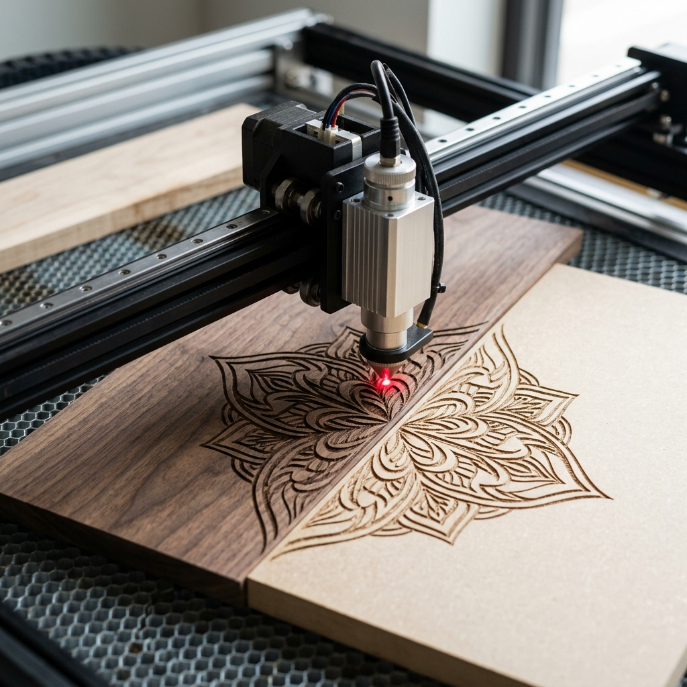

1. Corte e Gravação a Laser em MDF e Madeira
A precisão ao serviço do design e da arquitetura. O nosso processo de corte a laser em MDF garante encaixes exatos para maquetes, expositores de ponto de venda (PDV) e elementos vazados. A gravação a laser em madeira é minuciosamente controlada para gerar um contraste profundo e texturizado, preservando a elegância da fibra orgânica, sendo a escolha ideal para artesãos de alto padrão e projetos de embalagens exclusivas.